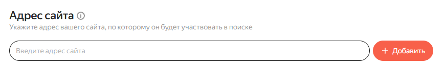
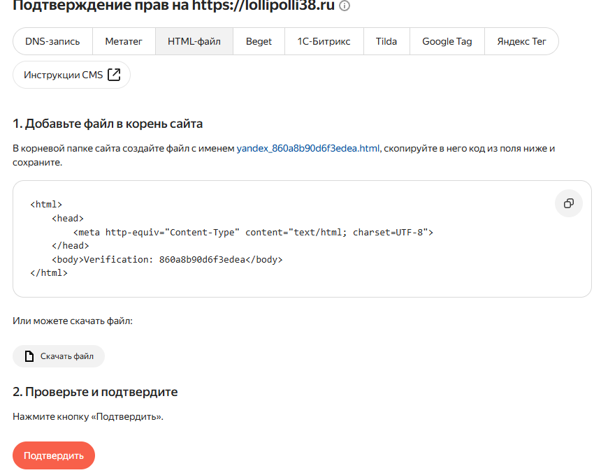
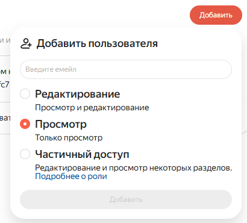
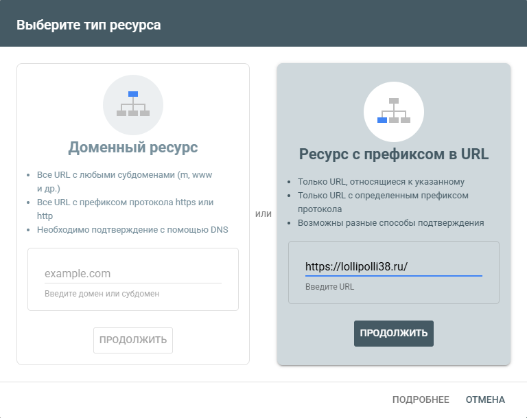
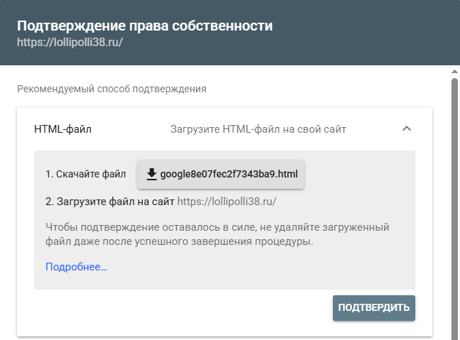
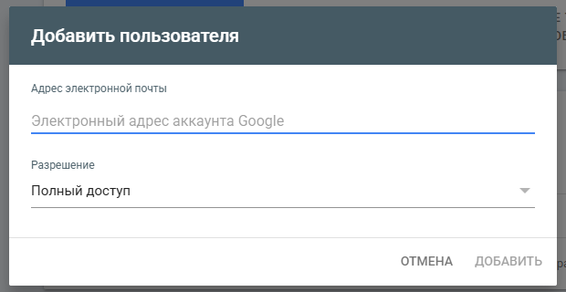

Займёт около 10 минут. Сайт добавляется в ваш аккаунт и остаётся вашим. От вас: добавить сайт, прислать нам скриншот, нажать «Подтвердить» и добавить нас в пользователи. Остальное настроим сами.
Понадобится ваш аккаунт Яндекса. Если пользуетесь Яндекс Почтой, подойдёт он.
Откройте webmaster.yandex.ru и войдите в свой аккаунт Яндекса.
В поле «Адрес сайта» вставьте адрес и нажмите «Добавить»:
https://lollipolli38.ru
Откроется страница «Подтверждение прав». В строке способов выберите «HTML-файл», сделайте скриншот и пришлите нам. Важно, чтобы название файла было видно целиком. Скачивать ничего не нужно.

На скриншоте пример. Название файла у вас будет другим. Оно начинается с yandex_, нам нужно увидеть его целиком.
Не закрывайте эту страницу. Мы положим файл на сайт и напишем вам. После нашего сообщения нажмите на ней «Подтвердить».
Добавьте нас в пользователи сайта. Откройте «Управление доступом», нажмите «Добавить», впишите нашу почту, выберите «Редактирование» и нажмите «Добавить»:
dolshanski235@yandex.ru
Понадобится аккаунт Google (обычно это почта Gmail). Если его нет, напишите нам, подскажем, что делать.
Откройте Search Console, войдите в свой аккаунт Google и нажмите «Добавить сайт» (может называться «Добавить ресурс»).
Выберите правую карточку «Ресурс с префиксом в URL», вставьте адрес и нажмите «Продолжить»:
https://lollipolli38.ru/
Откроется окно «Подтверждение права собственности». Способ «HTML-файл» обычно уже открыт сверху, если нет, нажмите на него. Сделайте скриншот и пришлите нам, название файла должно быть видно целиком. Скачивать ничего не нужно.

На скриншоте пример. Название файла у вас будет другим. Оно начинается с google, нам нужно увидеть его целиком.
Не закрывайте это окно. Когда мы напишем, что файл на сайте, нажмите в нём «Подтвердить». Если окно всё же закрылось, ничего страшного, напишите нам, подскажем.
Добавьте нас в пользователи сайта. Откройте «Пользователи и разрешения», нажмите «Добавить пользователя», впишите нашу почту, в поле «Разрешение» оставьте «Полный доступ» и нажмите «Добавить»:
dolshanski235@gmail.com
Дальше всё делаем мы: отправим поисковикам список страниц сайта, укажем в Яндексе регион Иркутск и попросим проверить сайт. Первые страницы появляются в поиске через несколько дней или недель, точный срок решают сами поисковики.